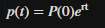

.png)
Tercer corte
El crecimiento de la población es un fenómeno dinámico influenciado por múltiples factores, y las ecuaciones diferenciales permiten capturar y estudiar estos cambios a lo largo del tiempo. El objetivo principal de este proyecto es aplicar diferentes métodos de solución a las ecuaciones diferenciales que modelan la evolución de la población de España. A través de este análisis, se busca no solo entender el comportamiento demográfico del país, sino también evaluar el impacto de diversos factores, como tasas de crecimiento poblacional.
Transformada de Laplace
Tenemos como ecuación poblacional lo siguiente:
.png)
Se aplica la transformada de Laplace
La transformada de Laplace de una función f(t) está definido
.png)
Ahora se aplica la t
.png)
Se usa la propiedad de la transformada de Laplace de la:
.png)
Se reorganiza la ecuación para resolver P(s)
.png)
Se factoriza P(s)
.png)
Se despeja P(s)
.png)
Ahora se aplica la transformada inversa de Laplace para encontrar P(t):
.png)
Se sabe que:
.png)
Por lo que:
.png)
A continución se muestra el código en matlab
.png)
La solución de la ecuación poblacional es:
P(t) = P0 * exp(r * t)
Muestreo Inicial
Primera Relación:
Ahora reemplazamos valores para hallar r y la población esperada para el año 2024

Teniendo en cuenta los siguientes datos reemplazamos valor en la ecuacion inicial para calcular la tasa de crecimiento poblacional (r):

De acuerdo a esto la ecuacion queda de la siguientemanera:

Se despeja la r

Y obtenemos que r es
r= 0.00168
Ya obtenido el valor de r se puede calcular la población epserada para el año 2024

Ahora se resuelve la ecuación

Codigo Matlab

Grafica


Ahora se calcula el error

Segunda Relación
Realizamos los calculos con otra Pareja de años para comprobar la certeza de la solucion inicial de la ecuacion poblacional con la transformada de La place

Teniendo en cuenta los siguientes datos reemplazamos valor en la ecuacion inicila para calcular la tasa de crecimiento poblacional (r):

De acuerdo a esto la ecuacion queda de la siguientemanera:

Se despeja la r

Y obtenemos que r es
r=0.00585
Ya obtenido el valor de r se puede calcular la población epserada para el año 2024

Ahora se resuelve la ecuación

Codigo Matlab

Grafica


Ahora se hace el calculo porcentaje de error:

Resolucion ecuacion logistica:
Transformada de Laplace
Se tiene como ecuacion logistica lo siguiente

Usamos Bernoulli para volver lineal la ecuacion y poder aplicar Laplace:
Ecuacion de Bernoulli:


Se obtiene de ecuacion lineal lo siguiente:

Ahora se aplica la transformada de Laplace

Ahora se aplica la transformada inversa de Laplace:

Ecuacion solucion:

Muestreo Inicial:
Primera relacion
Ahora se reempazan los valores para hallar y la poblacion esperada para el año 2024

Teniendo en cuenta que

Hallamos 1/C para los siguientes datos:


Ahora se puede reemplazar en la ecuacion inicial r y obtenemos la poblacion esperada para el 2024

Codigo Matlab

Grafica


Estimacion poblacion 2024-Codigo Matalab

Calculo del porcentaje de error:

Ahora reemplazamos valores para hallar r y la población esperada para el año 2024

Tenienedo en cuenta que:

Hallamos 1/C para los siguientes datos:


Sabiendo esto, podemos remplazar en las ecuación inicial r y obtenemos la poblacion esperada para el 2024

Codigo en Matlab para calcular C

Codigo para calcular r

Poblacion 2024

Grafica


Ahora se hace el calculo porcentaje de error: